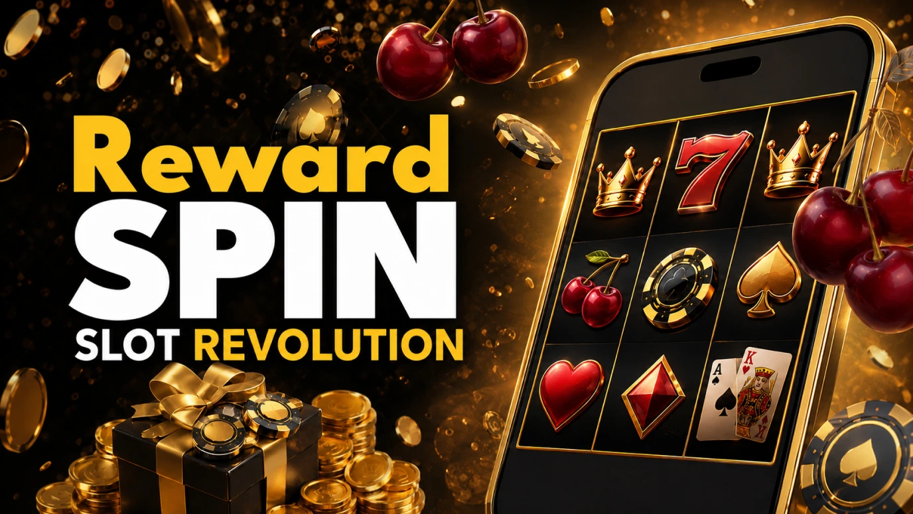

Betfair — Long-Running Casino and Exchange Brand for UK Audiences
Play BetfairTop Games

Players researching Betfair tend to look for clear answers on a handful of practical points: the breadth of the game lobby, how the sign-up package actually pays out, which deposit and withdrawal channels function smoothly, the registration journey from form to first spin, and how the experience scales between mobile and desktop. The usual follow-ups concern account access, identity checks, customer-support response times, and a realistic sense of what to expect before committing real money.
This review is written for adults in the UK who prefer factual context over marketing spin. The broader remit of the project is detailed on the About page. The structure works through game variety, banking flow, KYC steps, day-to-day account handling, and player-safety tooling — held to one underlying rule: gambling is a paid form of entertainment, not a substitute for income.
Table of Contents
- What Betfair actually is
- Why UK players search for Betfair
- Sign-up to first spin at Betfair
- Welcome package and Betfair bonus terms
- Pokies, tables, live dealer, exchange games
- Deposits, cashouts, and Betfair banking
- Payment Methods
- KYC, account security, and common delays
- Mobile apps, browser play, Betfair login fixes
- VIP scheme, recurring perks, and long-term value
- A practical way to assess Betfair
- Honest strengths and trade-offs
- Safer play and the UK regulatory backdrop
- Player Feedback
- Frequently Asked Questions
What Betfair actually is
Betfair is best known as the operator that pioneered the betting exchange in 2000, with the casino product layered on later as part of the Flutter Entertainment group. The international casino runs under UK Gambling Commission and Malta Gaming Authority oversight, with full casino, sportsbook, poker, and exchange products available under UKGC licensing in the UK. The lobby covers pokies, classic table games, live-dealer rooms, and exchange games — the deciding question for most players is how the full account journey holds up from registration to first cashout.
A fair assessment goes well beyond the landing-page graphic or the game thumbnails. It has to factor in banking infrastructure, identity verification, account-security layers, support response, mobile fit, and how plainly the rules are stated before any deposit lands. That's the standard worth applying to any operator a player is considering.
The operator leans on its long operating history, regulated licensing under UKGC and MGA, a deep games shelf weighted toward Playtech, dedicated mobile apps, and a support stack open around the clock. Anyone weighing the operator while based in the UK should note that online casino services are tightly regulated under rules enforced by the UK Gambling Commission (UKGC), and the underlying principle still holds: gambling is paid entertainment, not a reliable source of earnings.
| Attribute | Value |
|---|---|
| Licence | UKGC + MGA (operating since 2000) |
| Game library | 400+ titles from leading providers |
| Welcome bonus | 50 no-deposit FS + 100 FS on £10 (code CASAFS) |
| Wagering | No wagering on welcome free-spin winnings |
| Min deposit | £10 / €10 |
| Currencies | GBP, EUR, USD |
| Support | 24/7 live chat, email, phone |
| RNG audits | eCOGRA, UKGC-aligned testing |
| Platforms | Desktop, iOS app, Android app, mobile web |
Why UK players search for Betfair
Branded queries tend to spike when someone wants to verify a handful of practical points before opening an account — or when an existing player needs help logging back in. Within the UK segment, the usual checklist covers the games shelf, the bonus terms, payout timings, app and browser fit, and whether the registration and verification path looks manageable in practice.
Some visitors are doing pre-signup homework, others already hold an account and want clarity on access, banking, or specific clauses. Real-world experience can shift with account standing, the chosen deposit channel, KYC stage, regional platform settings, and whether the player has layered on national tooling like the GAMSTOP National Self-Exclusion Scheme. How visitor data on this site is processed is laid out on the Privacy Policy page, with the cookie footprint set out on the Cookie Policy page.
- To survey which pokies, classic tables, live-dealer rooms, and exchange games sit in the lobby
- To unpack the Betfair bonus mechanics, the CASAFS code, and the wording of recurring promotions
- To compare deposit options and Betfair cashout speeds across cards, e-wallets, and bank transfer
- To resolve Betfair login issues, two-factor prompts, or trigger a password reset
- To check the dedicated iOS and Android apps versus mobile-browser play
- To map out the KYC stages and any first-payout review before funds clear
Sign-up to first spin at Betfair
For most newcomers the path begins with the account form, then runs through email verification, the first deposit, game selection, and eventually withdrawal review if real-money play continues. Which features unlock and how an account is handled can shift with regional platform policy, the deposit method on file, and whether identity checks have been cleared yet.
Registration normally requests full legal name, email, date of birth, mobile number, residential address, and a chosen username plus password. Phone or email verification is built into the setup flow, and a document review may be required before the first withdrawal is released.
- Fill in registration details, select a username, and set a strong password
- Verify the email address and phone number tied to the account
- Enter the CASAFS promo code at sign-up if claiming the free-spin welcome offer
- Top up via a supported method to unlock real-money play and the 100-spin top-up
- Upload identity and address documents when prompted by compliance
- Request a withdrawal through an eligible route once verification is cleared
The journey reads as straightforward, but a quick read of the platform T&Cs before depositing remains a sound habit. Bonus eligibility, banking access, and payout timing can vary with account status or a triggered review, and UK residents should always check their position under the Gambling Act 2005 — the casino product is fully available to UK residents under UKGC licensing.
Welcome package and Betfair bonus terms: what to verify
Promotions usually catch the eye first, but the headline figure alone rarely captures the value. What actually matters is how the offer is structured, any wagering wrapped around it, which games count toward clearing it, and the conditions that can quietly limit a future cashout.

The sign-up offer fronts 50 no-deposit free spins on selected Jackpot King games via promo code CASAFS, followed by 100 extra free spins after a £10 deposit and qualifying play on eligible slots. Each spin is valued at 10p, winnings are paid in cash with no wagering on the spin payouts, and the spins themselves expire after seven days. E-wallet deposits such as PayPal, Skrill, and Neteller are excluded from the deposit-spin trigger.
The recurring promo line-up centres on Prize Pinball — a free daily game with a £1,000 jackpot pool plus smaller spin and bonus prizes — alongside Drop & Win cash drops on Pragmatic Play slots, seasonal poker and bingo offers, plus reload bonuses surfaced via the Promotions hub.
Bonus terms breakdown
| Offer area | What to verify | Why it matters |
|---|---|---|
| Welcome spins | CASAFS promo code, 50 no-deposit + 100 deposit-funded spins | Confirms the true headline rather than the marketing line |
| Wagering rules | No wagering on free-spin winnings, but 7-day expiry on each batch | Determines whether spins can be converted before they lapse |
| Free spins | Eligible Jackpot King titles, 10p spin value, win caps | Sets the realistic ceiling on welcome-spin returns |
| Recurring promos | Opt-in steps for Prize Pinball, Drop & Win, reloads | Not every offer applies to every account region or tier |
| Excluded methods | PayPal, Skrill, and Neteller deposits ineligible for welcome spins | Funding choice can quietly disqualify the deposit-spin trigger |
| Geo limits | Country restrictions on the casino product, including the UK | Decisive before counting on any promo value from Betfair Casino |
Reading the fine print first remains the safer path. It clarifies whether an offer genuinely fits a player's habits or just looks compelling at first glance, and guidance from GamCare — a long-running Betfair safer-gambling partner — helps spot warning signs in promotional terms before any deposit clears.
Pokies, tables, live dealer, exchange games — full picture
Game variety usually anchors how players judge Betfair. The casino library sits around 400+ titles weighted toward Playtech, with sections for pokies, classic table games, live-dealer rooms, video poker, and the signature Exchange Games where players back or lay roulette and blackjack outcomes.
The pokies shelf spans classic three-reel slots, video slots, Megaways grids, jackpot networks, and progressive Age of Gods titles. Listed studios include NetEnt, Microgaming, Pragmatic Play, Evolution Gaming, Betsoft, Play'n GO, Red Tiger, and the in-house Playtech catalogue — with Gladiator and Age of the Gods leading the progressive-jackpot rotation.
For anyone after shorter sessions or simpler mechanics, scratch-card formats and lighter table variants tend to fit, though the exact rules vary by game and provider.
| Game type | What to expect | Best suited to |
|---|---|---|
| Pokies | 400+ slots led by Playtech with Age of Gods progressives | Players after branded themes or jackpot networks |
| Table games | Multiple blackjack, roulette, and baccarat variants | Punters comfortable with traditional casino formats |
| Live casino | Branded Betfair tables plus Evolution and Playtech game shows | Players who want a more interactive, streamed flow |
| Exchange Games | Back-and-lay roulette and blackjack against other players | Punters who prefer P2P odds over a fixed house edge |
| Demo play | Free-play modes available on most slots | Users gauging volatility and feature feel before staking |
Deposits, cashouts, and Betfair banking
Deposits and withdrawals are linked but not symmetrical. A deposit usually settles in seconds, while a payout request may pass through verification, route checks, or document approval before funds leave the cashier.
The supported line-up includes: Visa and Mastercard debit cards, PayPal, Skrill, Neteller, Apple Pay, Paysafecard, and direct bank transfer. Supported currencies cover GBP, EUR, and USD across the international casino. PayPal payouts typically clear within a few hours for verified accounts, card and e-wallet cashouts within 6–24 hours, and bank transfers run 2–5 business days. Paysafecard is deposit-only, and e-wallet deposits are excluded from the welcome free-spin top-up.
Before pushing through a deposit or cashout, players should make sure:
- The selected method is approved for both funding and cashouts on the account
- Identity verification has cleared in full before any withdrawal is submitted
- The cardholder or wallet name matches the registered Betfair account exactly
- Active bonus terms don't restrict cashouts on bonus-linked winnings
- No first-payout review or compliance hold is currently slowing the request
- Card-issuer, bank, or wallet-side fees haven't been applied unexpectedly
- The account currency matches the chosen deposit and withdrawal route
- Method-specific minimums, ceilings, and processing windows are factored in
Payment Methods


KYC, account security, and common delays
Identity and age verification is mandatory at every UKGC-regulated operator and this site is no exception. The document review typically clears within 24–48 hours once the right files reach compliance, though queues can stretch around major sporting events.
Listed account-protection layers:
- SSL/TLS encryption across all account and payment traffic
- PCI DSS compliance on card processing
- Session-time and reality-check reminders set per UKGC requirements
- Two-factor authentication and device-recognition prompts
- Game-fairness testing aligned with eCOGRA and UKGC standards
Frequent reasons cashouts or verification slow down:
- Mismatch between the submitted name, address, or date of birth and the account record
- Document photos that are blurry, edge-cropped, glare-affected, or past the expiry date
- A funding method registered to a name other than the Betfair account holder
- Pending email or phone verification, or required profile fields left empty
- First-cashout review applied to any new account ahead of payout release
- Proof-of-address documents older than the three-month recency window
Concerns about how account-related issues are handled in this review can be raised through the Contact page.
Mobile apps, browser play, and Betfair login fixes
The brand runs both a fully responsive HTML5 site and dedicated iOS and Android apps for Casino, Exchange, Sportsbook, and Poker. The native apps deliver smoother live-dealer streams and biometric login, while the browser path stays open for users who prefer not to install anything. Either way, players should stay alert for phishing attempts and look-alike domains flagged by Action Fraud.
Steps when login or access fails:
- Check that the URL bar shows the official Betfair domain before entering any credentials
- Re-enter username and password carefully and disable autofill if values look wrong
- Trigger the password-reset link if the current credentials no longer unlock the account
- Clear browser cache, switch browsers, or reinstall the app if pages keep failing to load
- Open 24/7 live chat or call Betfair support if access or compliance review continues to block
VIP scheme, recurring perks, and long-term value
The operator has historically not run a traditional public VIP ladder on the casino side; instead, loyalty is rewarded through targeted offers, the Prize Pinball daily game, and ad-hoc free-bet drops surfaced through the My Bonuses hub.
Eligibility for personalised perks links to real-money turnover and account history. Reward shape varies across cashback drops, reload bonuses, priority support routing, withdrawal handling, and tailored offers pushed through the in-app inbox.
What to read before counting on loyalty perks
Players should examine how perks are triggered, whether all game categories contribute equally, and whether certain rewards are gated behind account standing or invitation. Worth checking too: any concealed usage rules on cashback drops, free-bet offers, or priority handling. Loyalty mechanics can quietly extend session length, so resources from BeGambleAware remain worth bookmarking.
A practical way to assess Betfair
The lobby is structured around pokies, table games, live casino, and exchange games, with search, recently-played, and filters covering provider, jackpot category, and RTP, supported by 24/7 live chat, email, and phone help. The funding model behind reviews on this site is set out on the Affiliate Disclosure page.
Evaluation checklist:
- Check that registration requirements and regional restrictions are stated up front
- Read the CASAFS welcome terms in full, covering spin expiry and excluded methods
- Verify which payment options cover both funding and cashouts on your region
- Prepare ID and proof-of-address documents in advance for compliance upload
- Test how easily titles surface via search, filters, and the favourites shortcut
- Compare the dedicated iOS and Android apps against mobile-browser play on your device
- Review available support channels — live chat, email, and phone — and their response times
- Confirm visible safety controls like 2FA, reality checks, and session-time reminders
- Check whether deposit limits and GAMSTOP-aligned self-exclusion tools are clearly surfaced
Honest strengths and trade-offs
A balanced view says more than a flat thumbs-up or thumbs-down. The operator has clear strengths — long operating history, top-tier regulators, branded live tables, and the unique exchange — but there are real trade-offs to weigh, particularly for anyone based in the UK where the casino product is geoblocked.
Pros:
- Operating since 2000 under UKGC and MGA oversight, part of Flutter Entertainment
- 400+ casino titles led by Playtech, including Age of Gods progressive jackpots
- Dedicated iOS and Android apps plus full HTML5 browser play
- Unique back-and-lay Exchange Games — the only major P2P casino format on the market
- 24/7 live chat, phone, and email support with GamCare safer-gambling integration
Cons:
- Casino, poker, and bingo products are geoblocked in the UK under the Gambling Act
- Some funding routes are deposit-only (Paysafecard) or excluded from welcome spins (PayPal, Skrill, Neteller)
- Welcome spins expire after seven days and are capped at 10p per spin in face value
- Card-issuer or wallet-side fees may apply on certain banking routes outside the operator's control
- Look-alike domains and phishing pages still appear in search results. Anyone feeling pressured by losses can call Samaritans on 116 123 for free 24/7 emotional support
The takeaway: strong points in one area don't cancel the need to read the fine print elsewhere. Regional eligibility, account verification, and clearly written bonus conditions remain central to how the site plays out day to day,. The editorial standards governing this review are set out on the Editorial Policy page.
Safer play and the UK regulatory backdrop
The platform is restricted to 18+ with age verification handled during registration. Available player-protection tooling covers deposit and loss limits (daily, weekly, or monthly caps), time-outs (24-hour to 6-week cooling-off blocks), reality checks (UKGC-mandated session pop-ups), and self-exclusion routes spanning short blocks up to permanent closure via GAMSTOP for UK accounts.
Online gambling in the UK is regulated by the Gambling Act 2005, enforced by the UK Gambling Commission (UKGC), with the Advertising Standards Authority (ASA) and Competition and Markets Authority (CMA) operating alongside. Player protection is reinforced by GAMSTOP, the National Self-Exclusion Scheme, which blocks an account from every UKGC-licensed online wagering operator — including the Betfair the UK exchange — in a single registration step.
If gambling stops feeling like leisure, free 24/7 support is available via GamCare (0808 8020 133), BeGambleAware, Samaritans (116 123), and the StepChange Debt Charity. Treat any deposit as the cost of entertainment. If play starts to affect sleep, finances, or relationships, step back and reach out for support. Practical safer-play habits and the full helpline set are gathered on the Responsible Gambling page.
Key terms users may run into
Anyone evaluating the platform should make sure these terms are clearly understood before any deposit lands. Realistic expectations around identity verification, payment consistency, account security, and safer-play tooling matter as much as the depth of the games shelf.
| Term | Meaning |
|---|---|
| KYC | Know Your Customer checks the operator uses to confirm identity, age, and address |
| Withdrawal | A request to move available cleared funds out of the Betfair wallet via an eligible route |
| Deposit limit | A player-set or operator-applied ceiling on funding over a daily, weekly, or monthly window |
| Wagering requirement | A play-through ratio attached to bonus credit or bonus-linked winnings before withdrawal |
| Exchange | Peer-to-peer market where players back outcomes or lay them against other Betfair users |
| Self-exclusion | A safer-play tool blocking or limiting account access for a set period, up to permanent closure |
Player Feedback
The feedback below reflects individual experiences and isn't a substitute for independent verification. UK consumers can review their general rights through the Competition and Markets Authority (CMA) at any time.